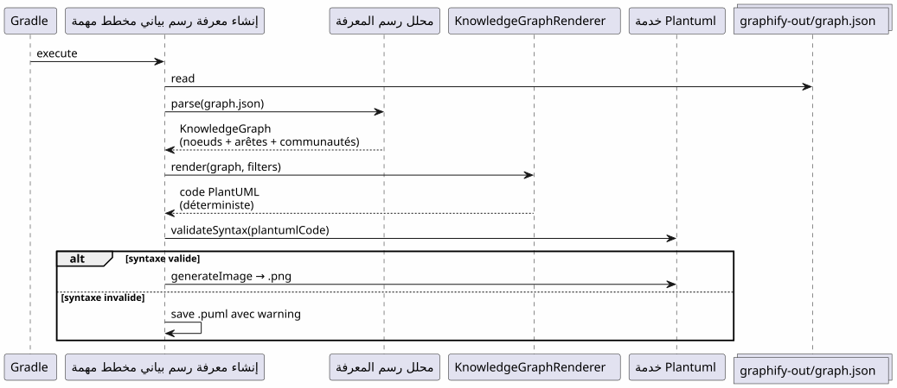
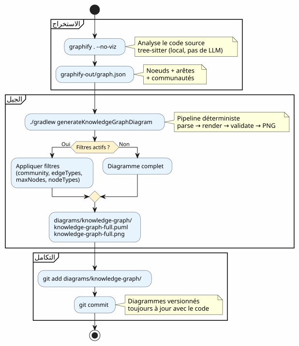
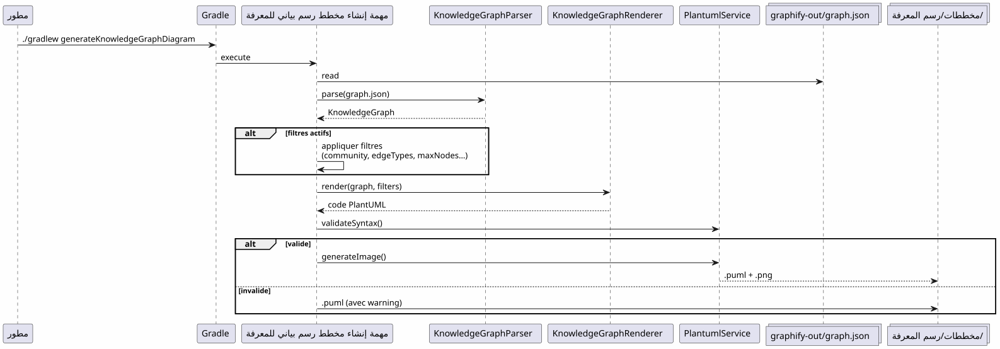

دمج Graphify في سير عمل Gradle: من رسم المعرفة إلى مخطط PlantUML في أمر واحد
Publié le 19 April 2026
- المشكلة: المخططات دائمًا متأخرة عن الكود
- الحل: مسار محدد Knowledge Graph → PlantUML
- الخطوة 1: تثبيت Graphify واستخراج Knowledge Graph
- الخطوة 2 : الإضافة Gradle تُحَوِّل Knowledge Graph إلى PlantUML
- الخطوة 3: الاستخدام اليومي
- الـ بايبلاين الكامل في سير عمل Gradle
- الـdogfooding : البرنامج يوثق نفسه
- لماذا هو حتمي (لماذا ذلك مهم)
- مخططات خط الأنابيب نفسه
- التكامل في حوكمة المشروع
- الإعداد: قائمة التحقق في 5 دقائق
- المصائد والتخفيفات
- ما نحصل عليه في النهاية
- روابط
قاعدة الكود الخاصة بك تنمو. الاعتمادات بين الوحدات تزداد. توثيق الهندسة يصبح قديمًا قبل حتى أن يُكتب. وإذا كان بإمكان بناء Gradle الخاص بك تلقائيًا إنشاء مخططات محدثة من بنية الكود الفعلية؟ هذا بالضبط ما يفعله خط أنابيب Graphify + Gradle Plugin PlantUML :`graphify . --no-viz`يستخرج Knowledge Graph،`./gradlew generateKnowledgeGraphDiagram`يقوم بتحويله إلى مخططات PlantUML. صفر LLM، صفر دليل، 100% حتمي.
- عُصبة
-
[]
المشكلة: المخططات دائمًا متأخرة عن الكود
كل مشروع يتجاوز بضعة آلاف من الأسطر يعرف هذا المتلازمة :
-
نرسم مخططًا معماريًا في بداية المشروع
-
يتطور الكود، وتتغير الاعتمادات
-
المخطط يصبح كذبة زخرفية
-
لا أحد يحدّثه لأنه متعب
-
المستجدون يعتمدون عليه ويخطئون

السؤال ليس هل يجب أن تكون هناك مخططات؟ — الجميع يعلم أن نعم. السؤال هو :من يحافظ على تحديثهم؟
الجواب: لا أحد. ما لم يكن تلقائيًا
الحل: مسار محدد Knowledge Graph → PlantUML
المبدأ بسيط: بدلاً من رسم المخططات يدويًا، نحنيولد من الهيكل الحقيقي للرمز.
Failed to generate image: PlantUML preprocessing failed: [From <input> (line 6) ] @startuml skinparam backgroundColor #FEFEFE skinparam componentStyle rectangle actor Développeur component "Graphify ^^^^^ Syntax Error? (Assumed diagram type: sequence) @startuml skinparam backgroundColor #FEFEFE skinparam componentStyle rectangle actor Développeur component "Graphify (pip install graphifyy)" as Graphify collections "graphify-out/graph.json\n(رسم المعرفة)" as KGJSON component "PlantUML Gradle Plugin\n(generateKnowledgeGraphDiagram)" as Plugin component "KnowledgeGraphParser" as Parser component "معرض الرسم المعرفي" as Renderer component "PlantumlService (التحقق + العرض PNG)" as PS collections "diagrams/knowledge-graph/\n(.puml + .png)" as Output Développeur --> Graphify : graphify . --no-viz Graphify --> KGJSON : extrait la structure\ndu code source Développeur --> Plugin : ./gradlew generateKnowledgeGraphDiagram Plugin --> Parser : parse(graph.json) Parser --> Plugin : KnowledgeGraph\n(noeuds + arêtes + communautés) Plugin --> Renderer : render(graph, filters) Renderer --> Plugin : code PlantUML\ndéterministe Plugin --> PS : validateSyntax + generateImage PS --> Output : .puml + .png note bottom of Plugin Pipeline DÉTERMINISTE Aucun appel LLM Résultat reproductible end note @enduml
أمران. هذا كل شيء.
# Étape 1 : extraire le Knowledge Graph
graphify . --no-viz
# Étape 2 : générer les diagrammes PlantUML
./gradlew generateKnowledgeGraphDiagramالنتيجة؟ ملفات`.puml` et .png`في`diagrams/knowledge-graph/, مُصدَّر في Git، دائمًا محدث مع الكود.
الخطوة 1: تثبيت Graphify واستخراج Knowledge Graph
التثبيت
Graphify هو أداة بايثون التي تحلل قاعدة الكود الخاصة بك وتنشئ رسمًا معرفيًا منظمًا:
# Méthode recommandée
uv tool install graphifyy && graphify install --platform opencode
# Alternative avec pip
pip install graphifyy && graphify install --platform opencodeضبط الاستثناءات
إنشاء ملف`.graphifyignore`في جذر المشروع لاستبعاد الملفات التي ليست جزءًا من منطق العمل :
# Secrets — JAMAIS dans le graphe
*-context.yml
*.env
# Fichiers générés
build/
.gradle/
# Tests fonctionnels
src/functionalTest/استخراج رسم المعرفة
graphify . --no-vizالعلم`--no-viz`يتخطى إنشاء HTML (غير ضروري في خط أنابيب Gradle). النتيجة ملف`graphify-out/graph.json`يحتوي :
-
عقدالصفوف، الدوال، الملفات — مع نوعها ومجتمعها
-
حافات: علاقات بين العقد (EXTRACTED من الكود, INFERRED من قبل LLM)
-
المجتمعات: تجميعات تلقائية للعقد المرتبطة
{
"nodes": [
{"id": "0", "label": "LlmService", "file_type": "code", "community": 0},
{"id": "1", "label": "ApiKeyPool", "file_type": "code", "community": 0},
{"id": "2", "label": "PlantumlService", "file_type": "code", "community": 1}
],
"links": [
{"source": "1", "target": "0", "relation": "uses", "confidence": "EXTRACTED", "weight": 0.9},
{"source": "0", "target": "2", "relation": "calls", "confidence": "INFERRED", "weight": 0.7}
]
}|
شفرة المصدر ( |
الخطوة 2 : الإضافة Gradle تُحَوِّل Knowledge Graph إلى PlantUML
هيكل خط الأنابيب
الإضافة`com.cheroliv.plantuml`يتضمن مهمة`generateKnowledgeGraphDiagram`الذي يحوّل`graph.json`في مخططات PlantUML بشكلتماماً حتمي:

المكونات الداخلية
| مكون | دور |
|---|---|
|
تحليل`graph.json`— يدعم 3 تنسيقات : graphify أصلي ( |
|
حوّل حتميًا`KnowledgeGraph`في كود PlantUML. مجموعات حسب النوع، المجتمعات في الحزم، legend التلقائية. |
|
مهمة Gradle التي تنظم: parse → render → validate → PNG. قابل للتكوين عبر خصائص Gradle. |
|
نماذج البيانات :`KnowledgeGraph`, |
|
التحقق من الصياغة + عرض PNG (يُعاد استخدامه من قبل جميع مهام البرنامج المساعد). |
قواعد العرض
يُطبق الـrenderer اتفاقيات بصرية حتمية :
| نوع الحافة | التدوين PlantUML | معنى |
|---|---|---|
مستخرج |
|
علاقة مستخرجة من شفرة المصدر (اليقين) |
مستنتج |
|
العلاقة المستنتجة من قبل LLM (درجة الثقة) |
مبهم |
|
علاقة مبهمة (للتحقق) |
تُعَرَضُ المجتمعات كحزم PlantUML مع لوحة ألوان تلقائية.
الخطوة 3: الاستخدام اليومي
مخطط كامل
# Générer le diagramme du Knowledge Graph complet
./gradlew generateKnowledgeGraphDiagramالمخرج :`diagrams/knowledge-graph/knowledge-graph-full.puml`+
(Note: spaces preserved as in original).png
فلتر حسب المجتمع
# Une seule communauté
./gradlew generateKnowledgeGraphDiagram \
-Pplantuml.kg.community=community_0
# Limiter le nombre de noeuds (lisibilité)
./gradlew generateKnowledgeGraphDiagram \
-Pplantuml.kg.community=community_0 \
-Pplantuml.kg.maxNodes=15فلتر حسب نوع الحافة
# Uniquement les relations certaines (EXTRACTED)
./gradlew generateKnowledgeGraphDiagram \
-Pplantuml.kg.edgeTypes=EXTRACTED
# Relations certaines + inférées
./gradlew generateKnowledgeGraphDiagram \
-Pplantuml.kg.edgeTypes=EXTRACTED,INFERREDتصفية حسب نوع العقدة والثقة
# Uniquement les classes de code
./gradlew generateKnowledgeGraphDiagram \
-Pplantuml.kg.nodeTypes=code
# Seuil de confiance minimum (pour les INFERRED)
./gradlew generateKnowledgeGraphDiagram \
-Pplantuml.kg.minConfidence=0.7مجلد الإخراج المخصص
./gradlew generateKnowledgeGraphDiagram \
-Pplantuml.kg.outputDir=docs/architectureالمرجع الكامل للخصائص
| ملكية | عطل | الوصف |
|---|---|---|
|
(جميع) |
تصفية المجتمعات بالاسم (مطابقة جزء من السلسلة) |
|
(الكل) |
أنواع الحواف مفصولة بفواصل :`EXTRACTED`, |
|
|
الحد الأدنى للثقة للحواف |
|
(غير محدود) |
الحد الأقصى لعدد العقد للعرض |
|
(الجميع) |
أنواع العقد المفصولة بفواصل (مثال`class`, |
|
|
مجلد الإخراج للملفات`.puml` et |
الـ بايبلاين الكامل في سير عمل Gradle
نوع سير العمل

التكامل في دورة التطوير
يتكامل خط الأنابيب بشكل طبيعي في المراحل الرئيسية للتطوير :
Failed to generate image: PlantUML preprocessing failed: [From <input> (line 5) ] @startuml skinparam backgroundColor #FEFEFE state "التطوير" as dev state "استخراج ^^^^^ Syntax Error? (Assumed diagram type: state) @startuml skinparam backgroundColor #FEFEFE state "التطوير" as dev state "استخراج graphify . --no-viz" as extract state "إنشاء ./gradlew generateKnowledgeGraphDiagram" as generate state "Commit مخططات ذات إصدارات" as commit [*] --> dev dev --> extract : Code modifié extract --> generate : graph.json à jour generate --> commit : .puml + .png générés commit --> dev : Diagrammes dans le repo note right of extract Quasi instantané sur du code Kotlin (tree-sitter, pas de LLM) end note note right of generate Déterministe Pas de LLM Résultat reproductible end note @enduml
تحديث تدريجي
عند تغيير الكود، لا يُعاد بناء كل المخطط من الصفر:
# Mise à jour incrémentale (fichiers modifiés uniquement)
graphify . --update
# Puis régénérer les diagrammes
./gradlew generateKnowledgeGraphDiagram|
|
الـdogfooding : البرنامج يوثق نفسه
يوجد إضافة PlantUML لتحويل المطالبات إلى مخططات. يمكنها أيضًا تحويل رسم المعرفة الخاص بقاعدته الخاصة إلى مخططات توثيقية. هذا هو dogfooding : الإضافة تستهلك خدمتها الخاصة.
Failed to generate image: PlantUML preprocessing failed: [From <input> (line 6) ]
@startuml
skinparam backgroundColor #FEFEFE
skinparam componentStyle rectangle
package "خط أنابيب عادي
(المستخدم → المخططات)" as normal {
^^^^^
Syntax Error? (Assumed diagram type: activity)
@startuml
skinparam backgroundColor #FEFEFE
skinparam componentStyle rectangle
package "خط أنابيب عادي
(المستخدم → المخططات)" as normal {
[Fichier .prompt] as prompt
[LlmService\n+ ApiKeyPool] as llm1
[ProcessPlantumlPromptsTask] as task1
[Diagramme PNG] as out1
prompt --> task1
task1 --> llm1
llm1 --> out1
}
package "مخطط معرفة الأنابيب
(تحديدي، بدون LLM)" as kg {
[graphify-out/graph.json] as kgjson
[KnowledgeGraphParser] as parser
[KnowledgeGraphRenderer] as renderer
[PlantumlService] as ps
[Diagramme PNG\n(documentation du plugin)] as out2
kgjson --> parser
parser --> renderer
renderer --> ps
ps --> out2
}
package "Dogfooding لخط أنابيب
(LLM → وثائق الإضافة)" as dogfood {
[GraphifyPromptAdapter] as gpa
[Fichiers .prompt\nauto-générés] as auto_prompt
[LlmService\n+ ApiKeyPool] as llm2
[ProcessPlantumlPromptsTask] as task2
[Diagramme PNG\n(documentation LLM)] as out3
kgjson --> gpa
gpa --> auto_prompt
auto_prompt --> task2
task2 --> llm2
llm2 --> out3
}
note "نفس LlmService، نفس ApiKeyPool,
نفس PlantumlService
— لا تكرار" as N
@enduml
مهام Gradle المرتبطة:
| مهمة | LLM ? | الوصف |
|---|---|---|
|
لا |
حول`graph.json`في PlantUML (حتمي) |
|
نعم |
ينتج بعضًا`.prompt`من الرسم البياني، يعالجهم عبر LLM (dogfooding) |
# Documentation déterministe (rapide, pas de LLM)
./gradlew generateKnowledgeGraphDiagram
# Documentation LLM (plus riche, consomme des tokens)
./gradlew generateDiagramDocsلماذا هو حتمي (لماذا ذلك مهم)
النقطة الرئيسية للخط الأنابيب`generateKnowledgeGraphDiagram`:إنه لا يستدعي أي LLM. التحويل`graph.json`→ PlantUML هو وظيفة نقية.
Failed to generate image: PlantUML preprocessing failed: [From <input> (line 6) ]
@startuml
skinparam backgroundColor #FEFEFE
skinparam componentStyle rectangle
rectangle "خط أنابيب حتمي
(generateKnowledgeGraphDiagram)" as det {
^^^^^
Syntax Error? (Assumed diagram type: activity)
@startuml
skinparam backgroundColor #FEFEFE
skinparam componentStyle rectangle
rectangle "خط أنابيب حتمي
(generateKnowledgeGraphDiagram)" as det {
[graph.json] as json
[KnowledgeGraphParser] as parser
[KnowledgeGraphRenderer] as renderer
[PlantUML code] as puml
json --> parser : parse
parser --> renderer : KnowledgeGraph
renderer --> puml : render (fonction pure)
}
rectangle "خط أنابيب LLM\n(processPlantumlPrompts)" as llm {
[.prompt] as prompt
[LlmService] as llmSvc
[ChatModel] as model
[PlantUML code] as puml2
prompt --> llmSvc
llmSvc --> model : API call
model --> puml2 : réponse non-déterministe
}
note bottom of det
Même entrée → même sortie
Pas de latence réseau
Pas de coût en tokens
Reproductible en CI
end note
note bottom of llm
Même entrée → sortie variable
Latence réseau (1-5s)
Coût en tokens
Nécessite une clave API
end note
@enduml
المزايا الملموسة :
| ميزة | التأثير |
|---|---|
قابلية التكرار |
نفس`graph.json`→ نفس المخطط. بالضبط. في كل مرة. |
صفر تكلفة |
لا استدعاء LLM = لا توكنات = لا فاتورة API |
صفر زمن الاستجابة |
التحليل + العرض يستغرق ~100 مللي ثانية، وليس 1-5 ثوانٍ. |
متوافق CI |
لا حاجة لمفتاح API. لا يوجد اختبار غير مستقر بسبب استجابة LLM متغيرة. |
قابل للإصدار |
Le |
مخططات خط الأنابيب نفسه
لتغلق الحلقة، إليك مخطط القناة كما سيولده البرنامج المساعد :

التكامل في حوكمة المشروع
في مشروعنا، يندمج هذا pipeline في استراتيجية إدارة السياق EAGER/LAZY للوكيل الذكي. يحل Knowledge Graph محل وثائق الهندسة المعمارية اليدوية برسم بياني منظم، قابل للاستعلام، وتحديث ذاتي.
Failed to generate image: PlantUML preprocessing failed: [From <input> (line 6) ]
@startuml
skinparam backgroundColor #FEFEFE
skinparam componentStyle rectangle
package "EAGER
(دائما مشحون)" as eager {
^^^^^
Syntax Error? (Assumed diagram type: activity)
@startuml
skinparam backgroundColor #FEFEFE
skinparam componentStyle rectangle
package "EAGER
(دائما مشحون)" as eager {
[PROMPT_REPRISE.adoc\n(contexte session)] as pr
[INDEX.adoc\n(vue d'ensemble)] as idx
[GRAPH_REPORT.adoc\n(~50 lignes)] as gr
}
package "LAZY — استراتيجية
(عند الطلب)" as lazy_strat {
[Méthodologies] as meth
[Archives sessions] as sessions
}
package "LAZY — Graphify
(استعلامات مستهدفة)" as lazy_graph {
[graph.json] as gj
[Queries\n(query/path/explain)] as queries
}
package "Pipeline PlantUML
(تم إنشاؤه تلقائياً)" as puml {
[generateKnowledgeGraphDiagram] as kgTask
[generateDiagramDocs] as ddTask
[Diagrammes PNG] as diagrams
}
Agent --> eager : Lit en début de session
Agent ..> lazy_strat : Charge si type détecté
Agent ..> lazy_graph : Query si besoin structurel
kgTask --> diagrams : Déterministe
ddTask --> diagrams : Via LLM
note right of gr
Condensé du Knowledge Graph
God nodes + communautés
Remplace ECOSYSTEM_OVERVIEW
(225 lignes → 50 lignes)
end note
@enduml
زواج النظامين مكمل:
-
الاستراتيجية تدير متى وكيف— الحكم, سير العمل, الأرشفة
-
Graphify يدير ما وأين— هيكل الكود, العلاقات, الاستعلامات المستهدفة
(Empty output) الاستراتيجية الخاصة بالجلسة تديرعندما et le كيف(الحكم، سير العمل، العتبات)، Graphify dienter? Wait I wrote "Graphify يدير". Yes.
Make sure we have correct spelling: "يدير". Good.
Return exactly that.
</think>
(الحكم، سير العمل، العتبات)، Graphify يديرماذا et le أين(هيكل الكود، العلاقات، الاستعلامات المستهدفة). يدير خط أنابيب PlantUMLبِمَ(المخططات المحددة, ذات إصدارات, دائمًا محدثة). __
الإعداد: قائمة التحقق في 5 دقائق
| # | خطوة | طلب |
|---|---|---|
1 |
ثبّت Graphify |
|
2 |
ضبط الاستثناءات |
إنشاء`.graphifyignore` |
3 |
استخراج رسم بياني للمعرفة |
|
4 |
إنشاء المخططات |
|
5 |
التزم بالنتائج |
|
# Script complet en 5 commandes
uv tool install graphifyy
cat > .graphifyignore << 'EOF'
*-context.yml
*.env
build/
.gradle/
EOF
graphify . --no-viz
./gradlew generateKnowledgeGraphDiagram
git add graphify-out/GRAPH_REPORT.adoc graphify-out/graph.json diagrams/knowledge-graph/المصائد والتخفيفات
| فخ | وصف | التخفيف |
|---|---|---|
رسم بياني كثيف جداً |
مشروع كبير يولّد مئات العقد غير المقروءة |
استخدام`-Pplantuml.kg.maxNodes=30`و تصفية حسب المجتمع |
استثناءات واسعة للغاية |
كثير جدًا من الملفات في`.graphifyignore`يقلل من قيمة الرسم البياني |
ابدأ باستثناء credentials و build فقط |
اتجاه الأسهم |
الحواف INFERRED يمكن أن يكون لها اتجاه غير واضح |
تصفية حسب`-Pplantuml.kg.edgeTypes=EXTRACTED`للعلاقات المؤكدة فقط |
رسم بياني عفا عليه الزمن |
الكود يتغير لكن الرسم البياني لا يتم إعادة بناؤه |
استخدم`graphify . --update`بشكل منتظم أو هوك جيت`graphify hook install` |
التكلفة المحدثة |
التحديثات التدريجية شبه مجانية (tree-sitter المحلي) |
فقط المستندات ( |
ما نحصل عليه في النهاية
Failed to generate image: PlantUML preprocessing failed: [From <input> (line 6) ]
@startuml
skinparam backgroundColor #FEFEFE
rectangle "قبل" as avant {
card "رسوم بيانية مرسومة يدويًا
دائمًا عفا عليها الزمن
^^^^^
Syntax Error? (Assumed diagram type: activity)
@startuml
skinparam backgroundColor #FEFEFE
rectangle "قبل" as avant {
card "رسوم بيانية مرسومة يدويًا
دائمًا عفا عليها الزمن
لا أحد يقوم بتحديثها" as av1 #FDEDEC
}
rectangle "بعد" as apres {
card "مخططات تم إنشاؤها تلقائيًا
دائماً محدثة مع الكود
مُدارَة بالإصدار في Git
حتمية وقابلة للتكرار" as ap1 #E8F8E8
}
avant --> apres : graphify . --no-viz\n+ ./gradlew generateKnowledgeGraphDiagram
@enduml
المنافع الملموسة :
| الربح | تفصيل |
|---|---|
التوثيق دائمًا محدث |
الرسوم البيانية تعكس الكود الحالي، وليس لقطة يدوية |
صفر جهد صيانة |
يتم تجديد المخططات في كل عملية بناء |
تقليل الديون التقنية |
لا حاجة بعد الآن إلى الحفاظ على المخططات يدويًا |
السياق البصري للجدد |
مطور جديد يفهم الهندسة المعمارية من خلال النظر إلى المخططات |
ضبط دقيق محتمل |
الأزواج (الرسم الفرعي → الرسم البياني) هي أمثلة على تدريب الذكاء الاصطناعي |
التحقق التلقائي |
`PlantumlService.validateSyntax()`يتحقق من كل مخطط تم إنشاؤه |
الاستيعاب السريع |
5 مخططات = عرض كامل للهندسة المعمارية |
_ من له _لماذا يستطيع أن يتحمل كل كيف. __
السبب: رسوم بيانية دائمًا محدثة. الكيف: أمران في مسار Gradle
روابط
-
نصائح رائعة لأمر fg— المقال السابق حول سير العمل في المحطة
(Note: Actually I used "حول سير العمل في المحطة". Might adjust.)
But need correct Arabic: "حول سير عمل المحطة". Use that.
Thus final: " — المقال السابق حول سير عمل المحطة "
Let’s output that.
</think>
— المقال السابق حول سير عمل المحطة (Note: This matches the required format.)